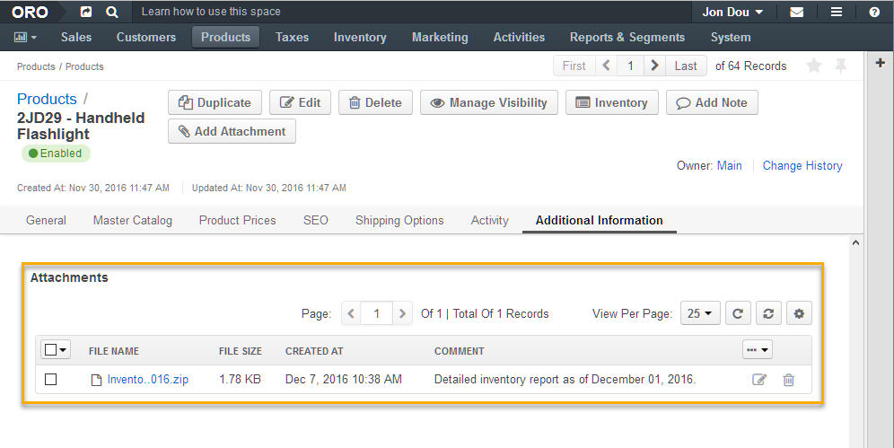

Adding an Attachment¶
Warning
Reused from OroCRM. Rework.
You can add an attachment to some system items in OroCommerce (e.g. Orders, Quotes, etc). Attchaments may be disabled for some items in system configuration, and every system item may have different attachment limitations (file types, size, and the way attachment links to the context).
Note
You may not be able to view or add attachments if your role or sytem configuration disable those options.
To add attachment to the item:
Click Add Attachment. It may be nesting in the More Actions menu.

In the Add Attachment page:
- Select the file to be attached.
- Add a comment, if necessary.
- To attach a file on behalf of other user, select the attachment owner.
Note
Only the owner and users with whose role enables management/viewing of the owner’s attachments are be able to manage and view the attachment.
- Click Save.

View and Manage Attachments¶
Attachments are available in the Additional Information section of the item details:
Available actions:
- Attach more files.
- : Delete an existing attachment.
- : Edit the attachment (upload updated file, change the comment text, and change the owner).